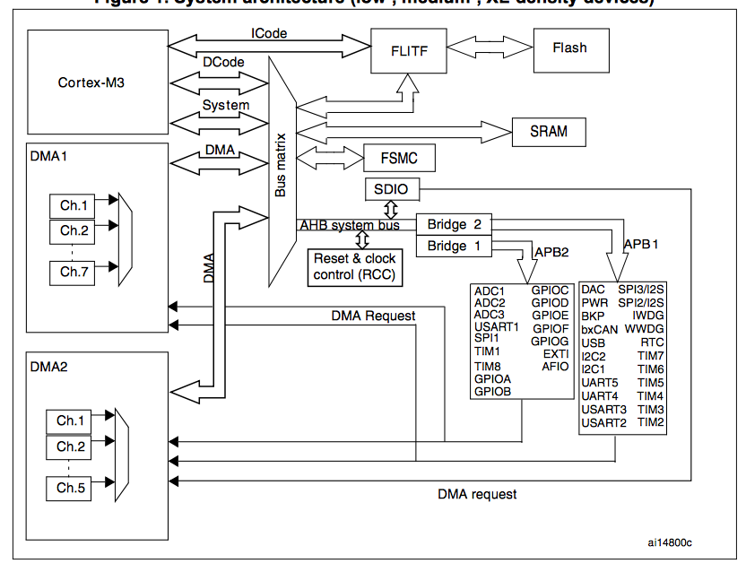
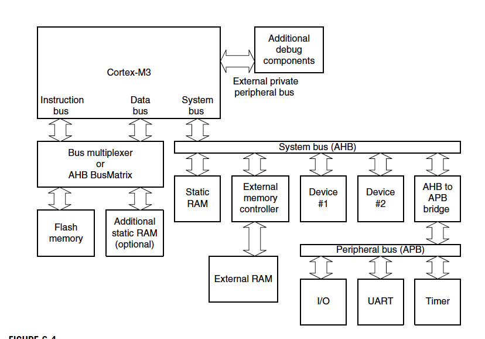

Introduction
Bus are used in computing device for transferring data. The bus can be used inside a core, inside a Soc, or externally to connect other peripherals.
Cortex-M3 interfaces
The cortex-M3 core has the 3 AHB-Lite bus interfaces for I-Code, D-code, system buses, and 2 APB buses, PPB and DAP, for debugging.
- The three buses along with the DMA bus are connects to a bus matrix as masters.
- I-code, D-code can only access memory from 0x00000000 to 0x1FFFFFFF.
- Prefetch is always fetch 4 byte (1 word) even if it is 16-bit Thumb. In this case, it pre-fetch two. (mov r0, pc will affect the real pc by a positive offset of 4)
- System bus can access 0x20000000 to 0xdfffffff and 0xE0100000 to 0xFFFFFFFF. In the slave side of the bus matrix, it connects two APB bridges that extends two APB bus for connecting peripherals.
- The external PPB (privatep peripheral bus) can access 0xe0040000 to 0xe00fffff. It connects the Trace Port interface unit and vendor specific peripherals.
- DAP bus connects debug interface blocks such as SWJ-DP or SW_DP.
Inside a STM32F1
STM32F1's system bus (AHB-lite) connects to two APB buses for on-chip peripherals.
- APB1 (low speed peripherals, up to 32MHz)
- APB2 (high speed peripherals, up to 72MHz)
- STM32 blocks
 - A general cortex-M3 microcontroller block
